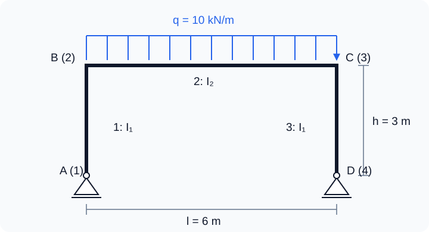

Решение, реакции и равновесие
В линейной статике требуется найти такие узловые перемещения, при которых внутренние упругие силы уравновешивают внешнюю нагрузку. Нулевые заданные перемещения позволяют решить только свободную часть системы, не изменяя полную матрицу жёсткости.
Полная и редуцированная системы
Исходное уравнение:
K u = F + R
Здесь R — реакции связей. Разделим строки и столбцы на свободные f и закреплённые c:
Свободная степень свободы в МКЭ — это узловое перемещение или поворот, значение которого не задано граничными условиями и должно быть найдено из расчёта. Термин относится к отдельной компоненте перемещения, а не к узлу целиком. Он не означает, что движение происходит без сопротивления: соединённые с узлом элементы могут деформироваться и создавать упругие усилия. Например, на незакреплённом конце консольной рамы свободны перемещения по X, Y и поворот, но им сопротивляется жёсткость консоли.
[ Kff Kfc ] [ uf ] = [ Ff ] + [ 0 ]
[ Kcf Kcc ] [ uc ] [ Fc ] [ Rc ]Для реализованных однородных опор uc = 0. Первая строка превращается в систему для неизвестных свободных перемещений:
Kff uf = Ff
Нагрузки, приложенные к закреплённым СС, не входят в правую часть редуцированной системы, но сохраняются в полном F и учитываются при вычислении реакций.
Проверка перед решением
validateReducedSystem проверяет конечность коэффициентов и положительную определённость симметризованной Kff разложением Холецкого. Неуспех обычно означает одно из двух:
- модель может перемещаться как твёрдое тело из-за недостаточных опор;
- внутри конструкции остался механизм, например возможно перемещение узла поперёк всех присоединённых ферменных стержней без их удлинения в линейном приближении.
Для единственного решения рассматриваемой линейной статической задачи опоры и жёсткость элементов должны исключать движения как твёрдого тела и внутренние механизмы — возможные движения без упругого сопротивления. Свободные СС при этом допустимы: соответствующие неизвестные перемещения определяются из уравнений равновесия Kffuf = Ff, а реакции вычисляются после решения. Полностью закреплённая модель — допустимый частный случай: при нулевых заданных перемещениях свободных СС нет, все перемещения нулевые, а реакции уравновешивают приложенные нагрузки.
Расширение до полного вектора
После решения редуцированной системы создаётся нулевой вектор длиной n, и найденные компоненты записываются по адресам freeDOFs:
u = zeros(numberOfDOFs, 1);
u(freeDOFs) = K(freeDOFs, freeDOFs) \ F(freeDOFs);Полный вектор необходим для восстановления деформаций элементов, реакций и результатов в любом узле. Закреплённые компоненты остаются равными точно нулю.
Реакции и глобальное равновесие
Реакции вычисляются после расширения решения из полного уравнения:
R = K u − F
В идеальном решении компоненты R на свободных СС равны нулю. На закреплённых СС они показывают силы и моменты, которыми опоры действуют на модель.
Одного малого невязочного вектора Ku − F − R недостаточно: он проверяет алгебру, но не знаки и расположение внешних сил. Поэтому calculateStaticEquilibrium независимо суммирует:
ΣFx = 0, ΣFy = 0, ΣMz = 0
Моменты включают плечи узловых сил xFy − yFx и собственные узловые моменты Mz рам.
Две аналитические проверки
Растянутый стержень
Для стержня длиной L, площади A и модуля Юнга E под осевой силой F:
u = FL/(EA), Rx = −F
Эта задача проверяет осевую жёсткость, карту СС, редукцию, знак реакции и глобальный баланс.
Консоль Эйлера–Бернулли
Для консоли длиной L под поперечной силой P на свободном конце:
v = PL3/(3EI), θ = PL2/(2EI)
Ry = −P, Mz = −PL
Один рамный элемент воспроизводит это решение точно для узловой концевой силы. Проверка находится в tests/run_verification_tests.m.
Постпроцессинг в автономном HTML/SVG-просмотрщике
После расчёта модель и результаты можно сохранить в компактный JSON-файл и открыть в автономном постпроцессоре MKE-F. Просмотрщик работает непосредственно через file://: локальный сервер, npm и подключение к интернету не требуются.
1. Выполните расчёт и экспортируйте результат
Запустите GNU Octave из корневого каталога проекта и выполните:
addpath(pwd);
setup;
problem = StructFEProblem(fullfile('examples', 'cases', 'ANSYSBeamStatic01.txt'));
model = problem.GetAnalysisModel();
result = problem.RunStatic();
exportOptions = struct( ...
'title', 'Статическая рама', ...
'lengthUnit', 'm', ...
'forceUnit', 'N', ...
'momentUnit', 'N*m', ...
'stressUnit', 'Pa', ...
'prettyPrint', true);
exportPostprocessorData(model, result, fullfile('output', 'static-frame.json'), exportOptions);Из корня репозитория выполните docker compose up --build (для старой отдельной команды — docker-compose up --build) и откройте препроцессор. Выберите Open TXT, загрузите examples/cases/CasePreprocessorStatic.txt и нажмите Run analysis. После расчёта GNU Octave результат откроется автоматически; кнопка Download JSON сохранит его вне временного контейнерного сеанса.
exportPostprocessorData проверяет размеры и конечность чисел, исключает глобальные и элементные матрицы и записывает версионированный UTF-8 JSON. Поля единиц являются только подписями: численные значения не пересчитываются. Для показанного экспорта в СИ постпроцессор выводит координаты и перемещения в метрах, силы, нагрузки и реакции — в ньютонах, моменты — в Н·м, напряжения — в Па.
2. Откройте и настройте изображение
- Откройте
postprocessor/index.htmlв современном Edge, Chromium или Firefox. - Нажмите Open JSON или перетащите
output/static-frame.jsonв пунктирную область. Готовый пример также находится вexamples/results/static-frame.json. - Включайте исходную и деформированную геометрию, опоры, нагрузки, реакции и номера узлов или элементов в панели Layers.
- Оставьте Scale = Automatic для автоматического увеличения перемещений либо задайте положительный коэффициент вручную. Колесо мыши изменяет масштаб, перетаскивание перемещает вид, а Reset view возвращает модель в окно.
- Щёлкните узел или элемент, чтобы выделить его и увидеть идентификатор и основные данные.
3. Выберите статический результат
- Для стержневых элементов 112 список Overlay показывает продольную силу или напряжение. Красный цвет соответствует растяжению, синий — сжатию.
- Для рамных элементов 113 список Overlay строит эпюры N, V или M. Без распределённой нагрузки принято N = −f₁ с положительным растяжением, V = −f₂, а момент линейно изменяется от −f₃ до f₆, где f — локальные концевые усилия. При равномерной поперечной нагрузке в JSON версии 2 эпюра момента параболическая. Положительные значения откладываются в сторону локальной оси +Y.
- Масштабы деформации, стрелок и эпюр независимы и указаны в легенде. Пустая или неподдерживаемая эпюра заменяется понятным сообщением об ошибке.
4. Сохраните иллюстрацию
Export SVG сохраняет масштабируемый векторный рисунок со встроенными стилями и контекстом расчёта. Для растрового изображения выберите разрешение 1×, 2× или 4× и нажмите Export PNG. В экспорт попадают область результата и, для переходного расчёта, текущий график, но не кнопки и боковая панель.
Проверьте, что передан результат RunStatic, все значения конечны, а JSON создан текущей функцией экспорта. Сообщение просмотрщика содержит путь к неверному полю, например $.analysis.displacements. Старое корректное изображение не заменяется при неудачной загрузке.
Верификация: трёхэлементная рама под равномерной нагрузкой
Астахов М. Ф., Каравальцев А. В., Макаров С. Я. - Справочная книга по расчету самолета на прочность, стр.327, Табл.III.35. Одинаковые стойки AB и DC, ригель BC, жёсткие узлы B и C. В основаниях A и D запрещены оба перемещения, повороты свободны (опоры типа 4). Модель содержит ровно три элемента 113 и четыре узла. Линейный расчёт Эйлера — Бернулли, без сдвиговых деформаций и геометрической нелинейности.

Назначенные данные: l = 6 м, h = 3 м, q = 10 кН/м, E = 200 ГПа, A₁ = A₂ = 0,02 м², J₁ = 8·10⁻⁵ м⁴, J₂ = 1,6·10⁻⁴ м⁴. В формате программы моменты инерции обозначаются I. Плотность 7800 кг/м³ обязательна во входных данных, но не влияет на статику; собственный вес автоматически не добавляется. Глобальные оси: X вправо, Y вверх; нагрузка только на элементе 2: 20,2,2,0,-10000.
Эталон рисунка и учёт продольных деформаций
Для положительной интенсивности q, направленной вниз, и положительного пролётного момента:
k = (J₂/J₁)(h/l) = 1; VA = VD = ql/2
H₀ = ql² / [4h(2k + 3)]; HA = +H₀, HD = −H₀
MB = MC = −H₀h; M(l/2) = ql²/8 − H₀h
Формулы рисунка пренебрегают продольными деформациями. Элемент 113 учитывает конечную жёсткость EA. Независимый метод сил, с освобождением горизонтальной связи D, даёт условие совместности:
H [2h³/(3EJ₁) + h²l/(EJ₂) + l/(EA₂)] = ql³h/(12EJ₂)
H = ql² / {4h[2k + 3 + 3J₂/(A₂h²)]}
Подстановка этого H в формулы моментов даёт точный эталон для принятой модели с конечным EA. Равное укорочение стоек не меняет распор, но учитывается в вертикальных перемещениях B и C. Разница распора с рисунком составляет около 0,0533%.
| Величина | По рисунку (EA → ∞) | Конечное EA, эталон МКЭ |
|---|---|---|
| VA = VD, кН | 30 | 30 |
| HA = −HD, кН | 6 | 5,996802 |
| MB = MC, кН·м | −18 | −17,990405 |
| M(l/2), кН·м | +27 | +27,009595 |
| MA = MD, кН·м | 0 | 0 |
Запуск и проверяемые результаты
Загрузите CasePinnedPortalUniform.txt через Open TXT в препроцессоре и выполните Run analysis. Автоматическая проверка находится в example_08_pinned_portal_uniform.m:
addpath(pwd);
setup;
addpath(fullfile(pwd, 'reference', 'examples'));
r = example_08_pinned_portal_uniform();
exportPostprocessorData(r.model, r.analysis, 'output/pinned-portal-uniform.json');Проверяются все реакции, все 18 концевых усилий, 12 узловых перемещений, продольные силы, моменты по длине ригеля, равновесие и приближение к формуле рисунка при увеличении площади ригеля в 100 раз. Допуск для усилий: 10⁻⁷ + 10⁻⁹|эталон| в Н или Н·м; для перемещений: 10⁻¹² + 10⁻⁹|эталон| в м или рад. Пример включён в общий набор test_reference_examples.
Концевые моменты в векторе localEndForces — силы на элемент, поэтому для BC: M_B = -f(3), M_C = f(6). Эпюра ригеля восстанавливается с учётом нагрузки: M(x) = −Hh + qx(l−x)/2. Линейная интерполяция концевых моментов пропустила бы положительный максимум. Трёх элементов достаточно для этих усилий и узловых перемещений; прогиб внутри нагруженного ригеля требует также частного решения от q либо уточнения сетки.
Готовый результат JSON можно открыть в постпроцессоре через Open JSON; выберите Overlay → M для эпюры моментов.
Источник исходных формул — приложенный пользователем фрагмент «Прямоугольная рама со стойками равного сечения с шарнирно закреплёнными основаниями». Библиографические данные на фрагменте отсутствуют. Размеры и свойства сечений назначены для данного примера.
Лабораторная 03. Растяжение стержня: перемещение и опорная реакция
Цель — получить перемещение из уравнения равновесия и объяснить, как одно неизвестное превращается в полный вектор четырёх перемещений.

Исходные данные и обозначения
Длина L = 2 м, площадь A = 0,01 м², модуль E = 200 ГПа, сила F = 1000 Н. Положительное направление X — вправо. Полный вектор имеет порядок [u₁x; u₁y; u₂x; u₂y].
| Глобальная СС | Перемещение | Условие |
|---|---|---|
| 1 | u₁x | 0, закреплено |
| 2 | u₁y | 0, закреплено |
| 3 | u₂x | Неизвестно, действует F |
| 4 | u₂y | 0, закреплено |
До запуска: расчёт на бумаге
- По схеме определите свободное перемещение и выпишите его глобальный номер.
- Вычислите жёсткость k = EA/L в Н/м. Запишите уравнение k·u₂x = F и найдите u₂x = FL/(EA).
- Из равновесия всего стержня найдите реакцию R₁x. Составьте полный вектор перемещений, вписав нули на закреплённых СС.
Запуск в Octave
Выполните из корня проекта. Готовая функция печатает результаты; для этой работы изменять её код не требуется.
addpath(pwd);
setup;
addpath(fullfile(pwd, "reference", "examples"));
r = example_03_static_bar();Работа с результатами
- В строках
Fixed DOFsиFree DOFsнайдите номера из своей таблицы. Номер 3 означает горизонтальное перемещение узла 2. - Сопоставьте
Reduced stiffness Kff [N/m]со своим EA/L, аReduced load Ff [N]— с силой F. Разделите второе число на первое: результат должен совпасть с третьей компонентойComplete displacement vector [m]. - Сравните полный вектор со своим прогнозом, а первую компоненту
Reaction vector [N]— с реакцией −F. Проверьте R₁x + F = 0. - По формуле предскажите, как изменится перемещение при удвоении отдельно L, A и E. Объясните, почему при той же силе реакция сохранится.
Kff = 10⁹ Н/м, Ff = 1000 Н, u₂x = 10⁻⁶ м = 0,001 мм. Полные векторы: u = [0; 0; 10⁻⁶; 0] м и R = [−1000; 0; 0; 0] Н. Жёсткость, сила и перемещение связаны уравнением, поэтому непосредственно сравнивать их численные значения между собой нельзя.
Что включить в отчёт
Схему с нумерацией СС, ручное уравнение, таблицу «величина — ручной расчёт — Octave — единицы» для жёсткости, перемещения и реакции; объяснение нулевых компонент и прогноз для трёх изменений параметров.
Исходный код главы
solveStatic.m— полный порядок статического решения;partitionDOFs.m— свободные и закреплённые индексы;validateReducedSystem.m— обнаружение механизмов;calculateStaticEquilibrium.m— баланс сил и момента;createPostprocessorData.m— подготовка проверенной структуры данных;exportPostprocessorData.m— безопасная запись JSON для постпроцессора;postprocessor/index.html— автономная визуализация и экспорт изображений;example_03_static_bar.m— исполняемая лабораторная.
Проверка распределённых нагрузок
Согласованные элементные нагрузки включаются в полный F до решения и вычисления R=Ku−F. Для равномерной нагрузки результирующая равна qL и приложена в середине исходного элемента; глобальное равновесие дополнительно проверяется по этим исходным результирующим. Для консоли |v(L)|=|q|L⁴/(8EI), |θ(L)|=|q|L³/(6EI); концевые усилия свободного конца равны нулю.
MPC
Для MPC решается Kr q = Fr и восстанавливается полный u = Tq. Силы вычисляются по исходной системе, включая нагрузки на зависимых и закреплённых СС. Статическое равновесие учитывает отдельно опорные реакции и силы MPC.
Подробное описание MPC · JSON v3 · CaseMPCFrame.txt · CaseMPCTruss.txt